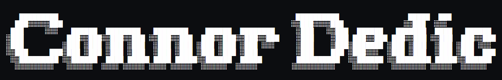

┌──────────────────────────────────────────────────────────────────────────────┐
│ ABOUT │ EDUCATION │ EXPERIENCE │ SKILLS │ CONTACT │
└──────────────────────────────────────────────────────────────────────────────┘
Connor Dedic - Aspiring Cyber-Offensive Specalist
|
└───Pursuing a B.S. in Cybersecurity at Brigham Young University - Idaho
|
└───Expected Graduation: April 2026
┌──────────────────────────────────────────────────────────────────────────────┐
│ WORK EXPERIENCE │
└──────────────────────────────────────────────────────────────────────────────┘
• Special Project, SleepData (June 2022 - August 2022)
|
└--- Developed Python script to track and locate lost medical devices.
• Teacher's Assistant, ME-172, BYU-Idaho (January 2023 - April 2023)
|
└---Assisted students with Computer Aided Design (CAD) projects and technical skills.
• Admissions Clerk, Yellowstone Bear World (May 2023 - Present)
|
└---Managed financial transactions and customer service for a major tourist attraction.
• Custodian, Hart Building, BYU-Idaho (January 2024 - April 2024)
|
└---Worked with a team to maintain campus cleanliness.
┌──────────────────────────────────────────────────────────────────────────────┐
│ SKILLS │
└──────────────────────────────────────────────────────────────────────────────┘
• Advanced Scripting (Python, Bash)
• Networking Fundamentals
• Database Management (SQL)
• Cybersecurity Tools (OSINT, VulnHub)
• Leadership: Vice-President of BYU-Idaho Society of Cybersecurity
┌──────────────────────────────────────────────────────────────────────────────┐
│ CONTACT │
└──────────────────────────────────────────────────────────────────────────────┘
• LinkedIn: linkedin.com/in/connor-dedic
• Email: connordedicpro@gmail.com
• Github: ConnorDedic